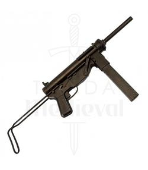
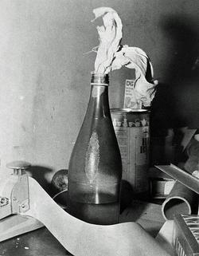
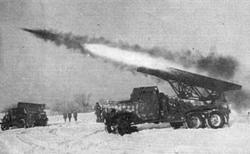
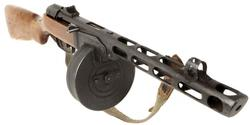

La bazuca (en inglés: bazooka) es un lanzacohetes antitanque portátil. Se hizo famosa durante la Segunda Guerra Mundial, donde fue una de las principales armas antitanque de infantería, usada por el Ejército de los Estados Unidos. Fue una de las primeras armas basadas en el explosivo HEAT (High Explosive Anti-Tank) en entrar en servicio. Recibió el nombre de "bazooka" debido al parecido con un instrumento musical inventado y usado por Bob Burns. Su uso se generalizó a partir de la Segunda Guerra Mundial.
Durante la Segunda Guerra Mundial la Wehrmacht obtuvo varias bazukas en el norte de África y en el frente oriental y, por ingeniería inversa, obtuvieron su propia versión, aumentando su calibre a 88 mm. Se distribuyeron ampliamente como raketenpanzerbüchse Panzerschreck (terror de los tanques). A finales de la guerra, los japoneses diseñaron un arma similar, el lanzacohetes tipo 4 70 mm AT, que tenía un diseño diferente y lanzaba granadas propulsadas por cohetes.
Además de lo que es el bazooka original, la palabra "bazuca" se usa a menudo incorrectamente para denominar a todas las armas antitanque operadas desde el hombro, como los lanzacohetes RPG.
Origen y desarrollo
El desarrollo del proyectil cohete fue una idea original del Dr. Robert H. Goddard, como un proyecto adicional de su trabajo sobre la propulsión de cohetes. Goddard, en el transcurso de su cargo en el Instituto Politécnico de Worcester, la Universidad de Clark y el Observatorio Monte Wilson, ideó un lanzacohetes para uso militar durante la Primera Guerra Mundial. Él y su compañero de trabajo, Dr. Clarence N. Hickman probaron con éxito esta arma en el Cuerpo de Señales del Ejército de los EE. UU. en el terreno de pruebas de Aberdeen, Maryland, el 6 de noviembre de 1918, pero como la guerra terminó con el armisticio de Compiègne cinco días más tarde se interrumpió el desarrollo. La demora en el desarrollo de esta arma se debió a una lucha de Goddard con la tuberculosis. Goddard continuó siendo un consultor a tiempo parcial del gobierno de los Estados Unidos en Indian Head, Maryland, hasta 1923, pero pronto se centró en otros proyectos relacionados con la propulsión de cohetes. Posteriormente, Hickman se convirtió en jefe del Comité de Investigación de Defensa Nacional en la década de 1940, donde dirigió el desarrollo de cohetes para la Segunda Guerra Mundial y se encargó de la finalización del bazooka.
La tecnología de la forma de carga del arma fue desarrollada en los EE. UU. con una granada de mano usada por la infantería contra vehículos con un blindaje de hasta 60 mm de grosor. La granada M10 era difícil de tirar a mano, pesaba 1,6 kg y era demasiado pesada para ser lanzada con un fusil lanzagranadas. La única forma práctica de usarla era que un soldado de infantería la colocase directamente sobre el tanque, lo que era una medio poco probable en la mayoría de las situaciones de combate. Entonces se desarrolló una versión más pequeña y menos potente, la M9, que se podía disparar desde un rifle. Esto dio como resultado la creación de una serie lanzadores de granadas para fusiles: el M1 (Springfield M1903), el M2 (Enfield M1917), el M7 (M1 Garand) y el M8 (M1 Carbine). Sin embargo, aún no se había encontrado un arma antitanque verdaderamente útil y, siguiendo el ejemplo de otros países en ese momento, el ejército estadounidense se preparó para evaluar diseños para un arma antitanque portátil más efectiva.
En 1942, el coronel del ejército estadounidense Leslie A. Skinner precisó la carga con forma de M10, que era capaz de parar a los tanques alemanes. Le encargó al teniente Edward Uhl crear un sistema para entregar la greanada. Uhl creó un pequeño cohete con ella, pero necesitaba proteger al que tirase el arma del fuego del cohete y, según él, encontró un tubo metálico y propuso que se tirase el cohete dentro del tubo con el mecanismo en el hombro.
El diseño fue finalizado en el Corcoran Hall de la Universidad George Washington de Washington D. C.
A finales de 1942 se introdujo el lanzacohetes M1A1. La munición del M1 era la M6, que era notoriamente poco fiable. La M6 fue mejorada como M6A1. También se mejoró el M1A1. Después de la M6 se produjeron otras ojivas alternativas, con lotes de cohetes M6 modificados con los últimos sistemas de ignición, para poder ser disparados desde los lanzacohetes M1 modificados. Muchos lanzacohetes M1 antiguos fueron modificados entre julio y agosto de 1943. A la munición modificada se le llamó M6A2.
La munición smoke rocket M10 de 60 mm y las variantes mejoradas (M10A1, M10A2, M10A4) usaban el motor y la aleta de la M6A1 pero reemplazaban la ojiva por otra con una carga de fósforo blanco. El fósforo blanco no solamente actúa generando un humo visible, sino que sus partículas pueden causar daños severos a la piel. Por ello, el M10 se usó para marcar objetivos, cegar a artilleros enemigos o conductores de vehículos y para expulsar a tropas de búnkeres y refugios.
Los lanzadores de cohetes originales M1 y M1A1 estaban equipados con miras fijas simples y usaban un tubo de lanzamiento sin refuerzos. Durante la guerra, el M1A1 tuvo una serie de modificaciones.
El M1 y el M1A1 usaban una mira posterior de hierro y una mira de escala situada junto a la boca del cañón. Los lados verticales de la mira de escala tenían inscritas las graduaciones de 100, 200, 300 y 400 yardas. En el M9, la mira de escala fue reemplazada por la mira de apertura de General Electric T43. El alineamiento se realizaba mirando por la mira trasera mientras que se ajustaba la frontal, que tenía las graduaciones de 100, 200 y 300 yardas. En septiembre de 1944, durante la producción del M9A1, la mira T43 fue reemplazada por la mira de Polaroid T90. La T43 y la T90 eran intercambiables.
El bazooka requería de un cuidado especial cuando era usado en climas tropicales o árticos, o en condiciones de mucho polvo o arena. Los cohetes no podían ser disparados a temperaturas que fuesen menores de −18 °C y mayores de 49 °C.
|
|

|
|

|

|
|

|